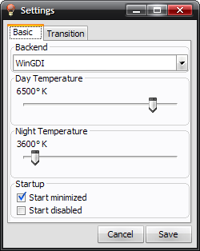
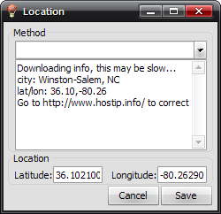

Monitor temperature adjustment program based on time of day. Helps prevent eye strain.
Redshiftgui changes the color temperature of your monitor to better match that of your surrounding. This means that it sets a cooler color temperature during the daytime (due to natural lighting) and sets a warmer temperature at night (due to indoor lighting). Similar to f.lux, this is a GUI port of the redshift project.
RedshiftGUI is a fork of the Redshift project by Jon Lund Steffensen. It was something I made because I wanted a GUI version of the program. The Redshift project itself is inspired by f.lux, there's more information on the benefit of this program on their home page.



You can tweak some of the settings, but the default should work fine.